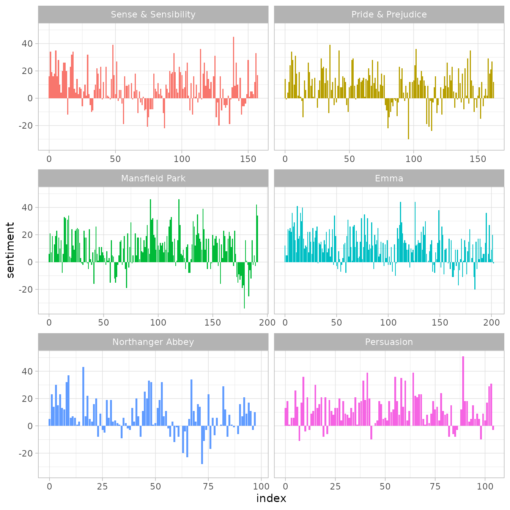
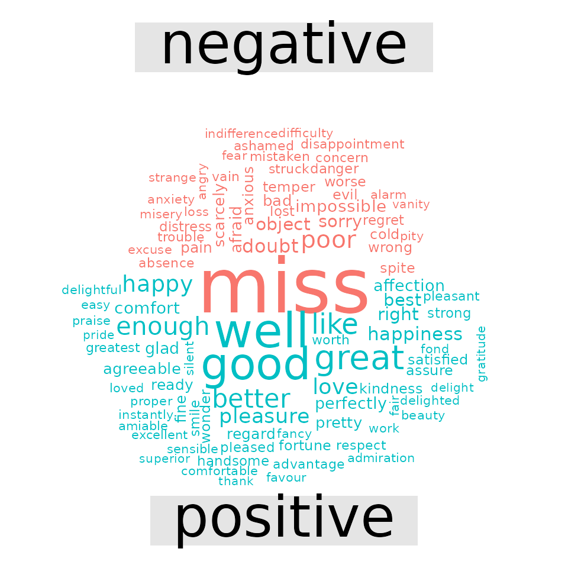

vignettes/tidytext.Rmd
tidytext.RmdUsing tidy data principles can make many text mining tasks easier, more effective, and consistent with tools already in wide use. Much of the infrastructure needed for text mining with tidy data frames already exists in packages like dplyr, broom, tidyr and ggplot2. In this package, we provide functions and supporting data sets to allow conversion of text to and from tidy formats, and to switch seamlessly between tidy tools and existing text mining packages. Check out our book to learn more about text mining using tidy data principles.
The novels of Jane Austen can be so tidy! Let’s use the text of Jane Austen’s 6 completed, published novels from the janeaustenr package, and transform them into a tidy format. janeaustenr provides them as a one-row-per-line format:
library(janeaustenr)
library(dplyr)
library(stringr)
original_books <- austen_books() %>%
group_by(book) %>%
mutate(line = row_number(),
chapter = cumsum(str_detect(text, regex("^chapter [\\divxlc]",
ignore_case = TRUE)))) %>%
ungroup()
original_books## # A tibble: 73,422 × 4
## text book line chapter
## <chr> <fct> <int> <int>
## 1 "SENSE AND SENSIBILITY" Sense & Sensibility 1 0
## 2 "" Sense & Sensibility 2 0
## 3 "by Jane Austen" Sense & Sensibility 3 0
## 4 "" Sense & Sensibility 4 0
## 5 "(1811)" Sense & Sensibility 5 0
## 6 "" Sense & Sensibility 6 0
## 7 "" Sense & Sensibility 7 0
## 8 "" Sense & Sensibility 8 0
## 9 "" Sense & Sensibility 9 0
## 10 "CHAPTER 1" Sense & Sensibility 10 1
## # … with 73,412 more rowsTo work with this as a tidy dataset, we need to restructure it as
one-token-per-row format. The
unnest_tokens function is a way to convert a dataframe with
a text column to be one-token-per-row:
library(tidytext)
tidy_books <- original_books %>%
unnest_tokens(word, text)
tidy_books## # A tibble: 725,055 × 4
## book line chapter word
## <fct> <int> <int> <chr>
## 1 Sense & Sensibility 1 0 sense
## 2 Sense & Sensibility 1 0 and
## 3 Sense & Sensibility 1 0 sensibility
## 4 Sense & Sensibility 3 0 by
## 5 Sense & Sensibility 3 0 jane
## 6 Sense & Sensibility 3 0 austen
## 7 Sense & Sensibility 5 0 1811
## 8 Sense & Sensibility 10 1 chapter
## 9 Sense & Sensibility 10 1 1
## 10 Sense & Sensibility 13 1 the
## # … with 725,045 more rowsThis function uses the tokenizers package to separate each line into words. The default tokenizing is for words, but other options include characters, ngrams, sentences, lines, paragraphs, or separation around a regex pattern.
Now that the data is in one-word-per-row format, we can manipulate it
with tidy tools like dplyr. We can remove stop words (accessible in a
tidy form with the function get_stopwords()) with an
anti_join.
cleaned_books <- tidy_books %>%
anti_join(get_stopwords())We can also use count to find the most common words in
all the books as a whole.
## # A tibble: 14,375 × 2
## word n
## <chr> <int>
## 1 mr 3015
## 2 mrs 2446
## 3 must 2071
## 4 said 2041
## 5 much 1935
## 6 miss 1855
## 7 one 1831
## 8 well 1523
## 9 every 1456
## 10 think 1440
## # … with 14,365 more rowsSentiment analysis can be done as an inner join. Sentiment lexicons
are available via the get_sentiments() function. Let’s look
at the words with a positive score from the lexicon of Bing Liu and
collaborators. What are the most common positive words in
Emma?
positive <- get_sentiments("bing") %>%
filter(sentiment == "positive")
tidy_books %>%
filter(book == "Emma") %>%
semi_join(positive) %>%
count(word, sort = TRUE)## # A tibble: 668 × 2
## word n
## <chr> <int>
## 1 well 401
## 2 good 359
## 3 great 264
## 4 like 200
## 5 better 173
## 6 enough 129
## 7 happy 125
## 8 love 117
## 9 pleasure 115
## 10 right 92
## # … with 658 more rowsOr instead we could examine how sentiment changes during each novel. Let’s find a sentiment score for each word using the same lexicon, then count the number of positive and negative words in defined sections of each novel.
library(tidyr)
bing <- get_sentiments("bing")
janeaustensentiment <- tidy_books %>%
inner_join(bing, multiple = "all") %>%
count(book, index = line %/% 80, sentiment) %>%
pivot_wider(names_from = sentiment, values_from = n, values_fill = 0) %>%
mutate(sentiment = positive - negative)Now we can plot these sentiment scores across the plot trajectory of each novel.
library(ggplot2)
ggplot(janeaustensentiment, aes(index, sentiment, fill = book)) +
geom_bar(stat = "identity", show.legend = FALSE) +
facet_wrap(vars(book), ncol = 2, scales = "free_x")
One advantage of having the data frame with both sentiment and word is that we can analyze word counts that contribute to each sentiment.
bing_word_counts <- tidy_books %>%
inner_join(bing, multiple = "all") %>%
count(word, sentiment, sort = TRUE)
bing_word_counts## # A tibble: 2,585 × 3
## word sentiment n
## <chr> <chr> <int>
## 1 miss negative 1855
## 2 well positive 1523
## 3 good positive 1380
## 4 great positive 981
## 5 like positive 725
## 6 better positive 639
## 7 enough positive 613
## 8 happy positive 534
## 9 love positive 495
## 10 pleasure positive 462
## # … with 2,575 more rowsThis can be shown visually, and we can pipe straight into ggplot2 because of the way we are consistently using tools built for handling tidy data frames.
bing_word_counts %>%
group_by(sentiment) %>%
slice_max(n, n = 10) %>%
mutate(word = reorder(word, n)) %>%
ggplot(aes(n, word, fill = sentiment)) +
geom_col(show.legend = FALSE) +
facet_wrap(vars(sentiment), scales = "free_y") +
labs(x = "Contribution to sentiment", y = NULL)This lets us spot an anomaly in the sentiment analysis; the word
“miss” is coded as negative but it is used as a title for young,
unmarried women in Jane Austen’s works. If it were appropriate for our
purposes, we could easily add “miss” to a custom stop-words list using
bind_rows.
We’ve seen that this tidy text mining approach works well with ggplot2, but having our data in a tidy format is useful for other plots as well.
For example, consider the wordcloud package. Let’s look at the most common words in Jane Austen’s works as a whole again.
In other functions, such as comparison.cloud, you may
need to turn it into a matrix with reshape2’s acast. Let’s
do the sentiment analysis to tag positive and negative words using an
inner join, then find the most common positive and negative words. Until
the step where we need to send the data to
comparison.cloud, this can all be done with joins, piping,
and dplyr because our data is in tidy format.
library(reshape2)
tidy_books %>%
inner_join(bing) %>%
count(word, sentiment, sort = TRUE) %>%
acast(word ~ sentiment, value.var = "n", fill = 0) %>%
comparison.cloud(colors = c("#F8766D", "#00BFC4"),
max.words = 100)
Lots of useful work can be done by tokenizing at the word level, but sometimes it is useful or necessary to look at different units of text. For example, some sentiment analysis algorithms look beyond only unigrams (i.e. single words) to try to understand the sentiment of a sentence as a whole. These algorithms try to understand that
I am not having a good day.
is a sad sentence, not a happy one, because of negation. The Stanford CoreNLP tools and the sentimentr R package are examples of such sentiment analysis algorithms. For these, we may want to tokenize text into sentences.
PandP_sentences <- tibble(text = prideprejudice) %>%
unnest_tokens(sentence, text, token = "sentences")Let’s look at just one.
PandP_sentences$sentence[2]## [1] "by jane austen"The sentence tokenizing does seem to have a bit of trouble with UTF-8 encoded text, especially with sections of dialogue; it does much better with punctuation in ASCII.
Another option in unnest_tokens is to split into tokens
using a regex pattern. We could use this, for example, to split the text
of Jane Austen’s novels into a data frame by chapter.
austen_chapters <- austen_books() %>%
group_by(book) %>%
unnest_tokens(chapter, text, token = "regex", pattern = "Chapter|CHAPTER [\\dIVXLC]") %>%
ungroup()
austen_chapters %>%
group_by(book) %>%
summarise(chapters = n())## # A tibble: 6 × 2
## book chapters
## <fct> <int>
## 1 Sense & Sensibility 51
## 2 Pride & Prejudice 62
## 3 Mansfield Park 49
## 4 Emma 56
## 5 Northanger Abbey 32
## 6 Persuasion 25We have recovered the correct number of chapters in each novel (plus an “extra” row for each novel title). In this data frame, each row corresponds to one chapter.
Near the beginning of this vignette, we used a similar regex to find where all the chapters were in Austen’s novels for a tidy data frame organized by one-word-per-row. We can use tidy text analysis to ask questions such as what are the most negative chapters in each of Jane Austen’s novels? First, let’s get the list of negative words from the Bing lexicon. Second, let’s make a dataframe of how many words are in each chapter so we can normalize for the length of chapters. Then, let’s find the number of negative words in each chapter and divide by the total words in each chapter. Which chapter has the highest proportion of negative words?
bingnegative <- get_sentiments("bing") %>%
filter(sentiment == "negative")
wordcounts <- tidy_books %>%
group_by(book, chapter) %>%
summarize(words = n())
tidy_books %>%
semi_join(bingnegative) %>%
group_by(book, chapter) %>%
summarize(negativewords = n()) %>%
left_join(wordcounts, by = c("book", "chapter")) %>%
mutate(ratio = negativewords/words) %>%
filter(chapter != 0) %>%
slice_max(ratio, n = 1)## # A tibble: 6 × 5
## # Groups: book [6]
## book chapter negativewords words ratio
## <fct> <int> <int> <int> <dbl>
## 1 Sense & Sensibility 43 161 3405 0.0473
## 2 Pride & Prejudice 34 111 2104 0.0528
## 3 Mansfield Park 46 173 3685 0.0469
## 4 Emma 15 151 3340 0.0452
## 5 Northanger Abbey 21 149 2982 0.0500
## 6 Persuasion 4 62 1807 0.0343These are the chapters with the most negative words in each book, normalized for number of words in the chapter. What is happening in these chapters? In Chapter 43 of Sense and Sensibility Marianne is seriously ill, near death, and in Chapter 34 of Pride and Prejudice Mr. Darcy proposes for the first time (so badly!). Chapter 46 of Mansfield Park is almost the end, when everyone learns of Henry’s scandalous adultery, Chapter 15 of Emma is when horrifying Mr. Elton proposes, and in Chapter 21 of Northanger Abbey Catherine is deep in her Gothic faux fantasy of murder, etc. Chapter 4 of Persuasion is when the reader gets the full flashback of Anne refusing Captain Wentworth and how sad she was and what a terrible mistake she realized it to be.